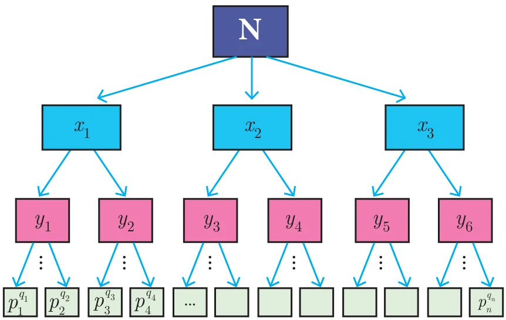
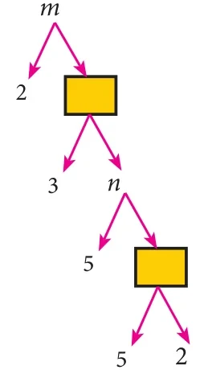

Let us consider the following conversation between a Teacher and students.
| Speaker | Says |
|---|---|
| Teacher | Factorise the number 240. |
| Malar | \(24 \times 10\) |
| Raghu | \(8 \times 30\) |
| Iniya | \(12 \times 20\) |
| Kumar | \(15 \times 16\) |
| Malar | Whose answer is correct Sir? |
| Teacher | All the answers are correct. |
| Raghu | How sir? |
| Teacher | Split each of the factors into product of prime numbers. |
| Malar | \(2 \times 2 \times 2 \times 3 \times 2 \times 5\) |
| Raghu | \(2 \times 2 \times 2 \times 2 \times 3 \times 5\) |
| Iniya | \(2 \times 2 \times 3 \times 2 \times 2 \times 5\) |
| Kumar | \(3 \times 5 \times 2 \times 2 \times 2 \times 2\) |
| Teacher | Good! Now, count the number of 2’s, 3’s and 5’s. |
| Malar | I got four 2’s, one 3 and one 5. |
| Raghu | I got four 2’s, one 3 and one 5. |
| Iniya | I also got the same numbers too. |
| Kumar | Me too sir. |
| Malar | All of us got four 2’s, one 3 and one 5. This is very surprising to us. |
| Teacher | Yes, It should be. Once any number is factorized up to a product of prime numbers, everyone should get the same collection of prime numbers. |
This concept leads us to the following important theorem.
Theorem 4 (Fundamental Theorem of Arithmetic) (without proof)
“Every positive integer (except the number 1) can be represented in exactly one way apart from rearrangement as a product of one or more primes.”

The fundamental theorem asserts that every composite number can be decomposed as a product of prime numbers and that the decomposition is unique. In the sense that there is one and only way to express the decomposition as product of primes.
In general, we conclude that given a composite number N, we decompose it uniquely in the form \(N = p_1^{q_1} \times p_2^{q_2} \times p_3^{q_3} \times \cdots \times p_n^{q_n}\) where \(p_1, p_2, p_3, \ldots, p_n\) are primes and \(q_1, q_2, q_3, \ldots, q_n\) are natural numbers.
First, we try to factorize N into its factors. If all the factors are themselves primes then we can stop. Otherwise, we try to further split the factors which are not prime. Continue the process till we get only prime numbers.
Thinking Corner
Is 1 a prime number?
Illustration
For example, if we try to factorize 32760 we get
\(\begin{aligned} 32760 &= 2 \times 2 \times 2 \times 3 \times 3 \times 5 \times 7 \times 13 \\ &= 2^3 \times 3^2 \times 5^1 \times 7^1 \times 13^1 \end{aligned}\)
Thus, in whatever way we try to factorize 32760, we should finally get three 2’s, two 3’s, one 5, one 7 and one 13.
The fact that “Every composite number can be written uniquely as the product of power of primes” is called Fundamental Theorem of Arithmetic.
Progress Check
- Every natural number except \(\underline{\qquad}\) can be expressed as \(\underline{\qquad}\).
- In how many ways a composite number can be written as product of power of primes?
- The number of divisors of any prime number is \(\underline{\qquad}\).
2.4.1 Significance of the Fundamental Theorem of Arithmetic
The fundamental theorem about natural numbers except 1, that we have stated above has several applications, both in Mathematics and in other fields. The theorem is vastly important in Mathematics, since it highlights the fact that prime numbers are the ‘Building Blocks’ for all the positive integers. Thus, prime numbers can be compared to atoms making up a molecule.
Do you know?
- If a prime number \(p\) divides \(ab\) then either \(p\) divides \(a\) or \(p\) divides \(b\), that is \(p\) divides at least one of them.
- If a composite number \(n\) divides \(ab\), then \(n\) neither divide \(a\) nor \(b\). For example, 6 divides \(4 \times 3\) but 6 neither divide 4 nor 3.
Example 2.7
In the given factorisation, find the numbers \(m\) and \(n\).

Solution
\(\begin{aligned} \text{Value of the first box from bottom} &= 5 \times 2 = 10 \\ \text{Value of } n &= 5 \times 10 = 50 \\ \text{Value of the second box from bottom} &= 3 \times 50 = 150 \\ \text{Value of } m &= 2 \times 150 = 300 \end{aligned}\)
Thus, the required numbers are \(m = 300,\ n = 50\)
Example 2.8
Can the number \(6^n\), \(n\) being a natural number end with the digit 5? Give reason for your answer.
Solution
Since \(6^n = (2 \times 3)^n = 2^n \times 3^n\),
2 is a factor of \(6^n\). So, \(6^n\) is always even.
But any number whose last digit is 5 is always odd.
Hence, \(6^n\) cannot end with the digit 5.
Progress Check
- Let \(m\) divides \(n\). Then GCD and LCM of \(m, n\) are \(\underline{\qquad}\) and \(\underline{\qquad}\).
- The HCF of numbers of the form \(2^m\) and \(3^n\) is \(\underline{\qquad}\).
Example 2.9
Is \(7 \times 5 \times 3 \times 2 + 3\) a composite number? Justify your answer.
Solution
Yes, the given number is a composite number, because
\(7 \times 5 \times 3 \times 2 + 3 = 3 \times (7 \times 5 \times 2 + 1) = 3 \times 71\)
Since the given number can be factorized in terms of two primes, it is a composite number.
Example 2.10
‘\(a\)’ and ‘\(b\)’ are two positive integers such that \(a^b \times b^a = 800\). Find ‘\(a\)’ and ‘\(b\)’.
Solution
The number 800 can be factorized as
\(800 = 2 \times 2 \times 2 \times 2 \times 2 \times 5 \times 5 = 2^5 \times 5^2\)
Hence, \(a^b \times b^a = 2^5 \times 5^2\)
This implies that \(a = 2\) and \(b = 5\) (or) \(a = 5\) and \(b = 2\).
Thinking Corner
Can you think of positive integers \(a\), \(b\) such that \(a^b = b^a\)?
Activity 3
Can you find the 4-digit pin number ‘\(pqrs\)’ of an ATM card such that \(p^2 \times q^1 \times r^4 \times s^3 = 3{,}15{,}000\)?